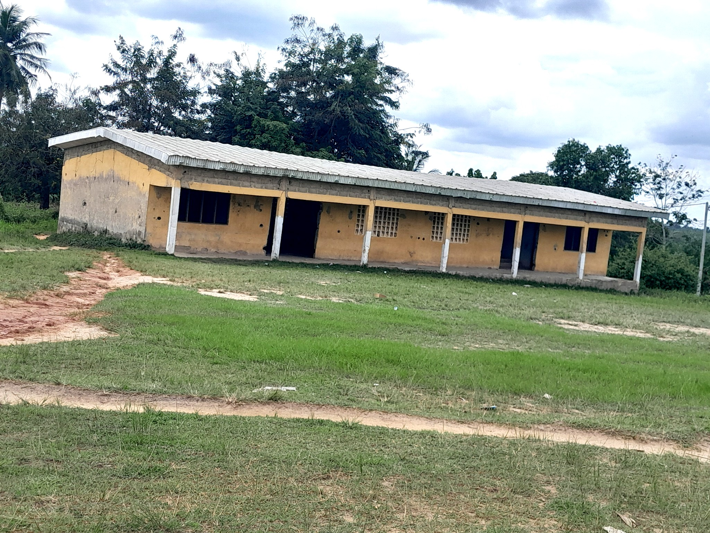
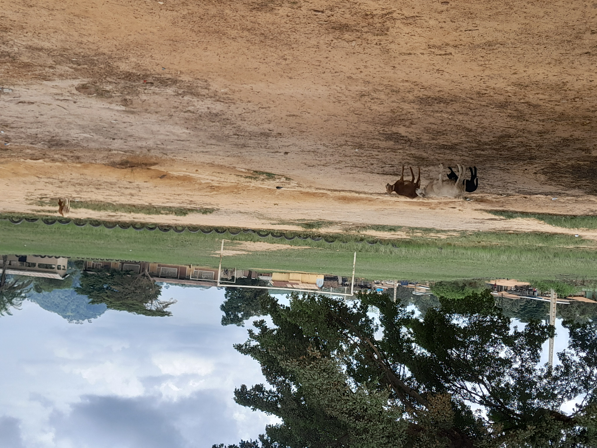

Nos Projets
Projets 2025
Foyer polyvalent d’Okrouyo
✅ Projet réalisé en 2025 : construction et mise en service du Foyer polyvalent, un espace dédié à l’accueil d’activités éducatives, sociales et culturelles pour la communauté d’Okrouyo.
Projets 2026
Tournoi Okrouyo 26
🏟️ Grand tournoi sportif prévu pour 2026, rassemblant les équipes locales autour du football et de la fraternité. Ce projet vise à promouvoir la jeunesse et la cohésion sociale dans la région d’Okrouyo.
